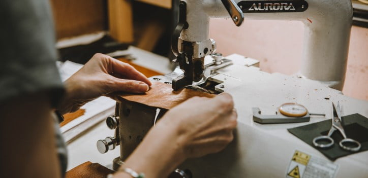

История бренда L8R
Миланское качество — любовь к деталям
Как всё начиналось
L8R зародился в 2018 году в самом сердце Милана — города, где мода превращается в искусство. Мы хотели создавать сумки, которые будут не просто аксессуаром, а настоящим произведением искусства.
Наша философия
Каждая сумка L8R создаётся в уютной дизайнерской мастерской, расположенной в живописных окрестностях Милана. Мы гордимся сотрудничеством с потомственными итальянскими мастерами, чьи семьи на протяжении многих поколений бережно хранят и передают уникальные секреты кожевенного искусства.
Почему выбирают L8R?
- ✓ Только натуральная итальянская кожа высшего качества
- ✓ Ручная работа — каждая сумка уникальна
- ✓ Эксклюзивный дизайн, который не встретишь в масс-маркете
- ✓ Возможность примерки в нашем бутике в Воронеже
- ✓ Индивидуальный пошив под ваши пожелания

Материалы и производство
Для создания наших сумок мы используем только натуральную итальянскую кожу из региона Тоскана — региона с многовековыми традициями кожевенного дела.
Фурнитура покрыта 24-каратным золотом, что гарантирует долговечность и сохранение блеска на долгие годы.
Каждая сумка проходит контроль качества перед тем, как попасть в наш бутик.
Как создаётся сумка L8R
Эскиз и лекала
Дизайнер разрабатывает уникальную форму и создаёт выкройки
Раскрой кожи
Мастер вручную выкраивает детали из цельного куска кожи
Роспись и декор
Нанесение уникальных принтов, вышивка, установка фурнитуры
Сборка и прошивка
Ручная сборка и прошивка всех деталей
Контроль качества
Проверка каждого шва, замка и элемента декора
Финальная упаковка
Сумка упаковывается в фирменную коробку с лентой